| 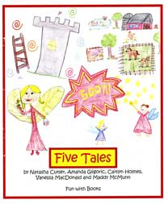 |
This is a unique book of five different stories by five young ladies from two different grade schools. The authors are:
|
|||
| 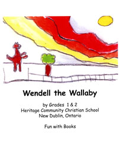 |
This is a very special book about a very special wallaby. Follow this touching true story through the eyes of 9 young people.
Authors and Illustrators: Grade 1 & 2 class of 2008 at Heritage Community Christian School
|
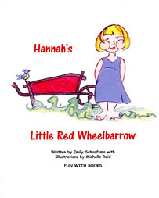 |
What are your favourite garden vegetables? Let Hannah
take you for a ride through her garden to show you the
ones she likes! A delightful veggie story by Emily
Schaafsma and illustrated by Michelle Reid.
Author: Emily Schaafsma
Illustrator: Michelle Reid
|
|
| 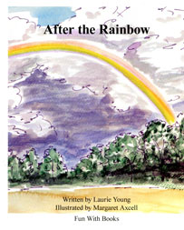 |
An unlikely group of animals get together for a journey
In search of what happens at the end of a rainbow. Join
Rabbit, Groundhog, Beaver, Fox, Toad, and Owl for a
grand adventure written by Laurie Young and illustrated
by Margaret Axcell.
Author: Laurie Young
Illustrator: Margaret Axcell
|
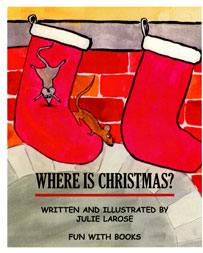 |
Ever wonder what the true joys of Christmas are?
Julie Larose has written and illustrated a memorable
search for some answers as Baby Mouse treks through
the house on a night during the Christmas season.
Author and Illustrator: Julie Larose
|
|
| 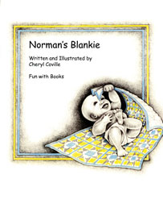 |
Norman, like so many children, has a favourite blanket
that becomes his constant companion. Cheryl Coville's
beautiful pen and ink drawings and story tells how his
mom helps Norman to enjoy his blankie beyond childhood.
Author and Illustrator:Cheryl Coville
|
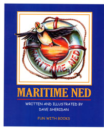 |
Ned struggles to survive a wild storm on the wild waves
of the ocean while at home his beloved Belle worries and
waits for his return. Dave Sheridan's exciting tale of Ned's
adventure comes to an end with Belle's loving help.
Author and Illustrator: Dave Sheridan
|
|
| 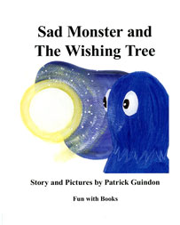 |
Sad Monster searches far and wide to find the magic tree
that will allow him to make a very special wish. Before his
trek is over, he meets Charlie the giraffe and together they
discover a common goal. Patrick Guindon's colourful
drawings and happy story make up this upbeat tale.
Author and Illustrator: Patrick Guindon
|
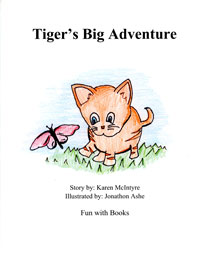 |
Tiger was happy living in a small community with his
family. When his family moved to the big city, Tiger ran
away and found himself in some scary situations. His
eventual rescue makes for an exciting story told by
Karen McIntyre and illustrated by Jonathon Ashe as part
of a creative writing course at Thousand Islands
School in Brockville.
Author: Karen McIntyre
Illustrator: Jonathon Ashe
|
|
| 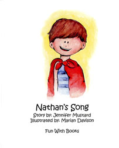 |
Jennifer Mustard and Marian Davison have teamed up to
` produce the delightful story of a mother's struggle to have
her son take his bath using the magic of song to make it
happen. Read Nathan's Song and found out who is bi2
audience really is.
Author: Jennifer Mustard
Illustrator: Marian Davidson
|
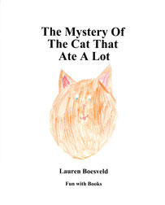 |
When Lauren Boesveld was in grade three in at
Merrickville Public School, she wrote and illustrated
the story of Ginger, a spirited cat that ends up
stranded in a tall tree. With the help of the fire
department and the lure of many portions of her
favourite cat food, Ginger comes home again.
Author and Illustrator: Lauren Boesveld
|
|